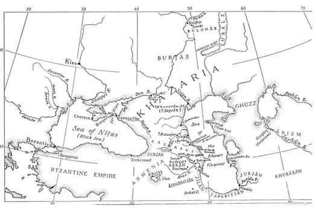

IV.
İKİNCİ ARAP-HAZAR SAVAŞI (727-737)1
1 DÖRDÜNCÜ BÖLÜM İÇİN BİBLİOGRAFİK NOT: Bu bölümün son kısımlarında Taberi’nin Bal’ami’ye ait Farsça uyarlamasından yararlanılmıştır. Bu noktada birkaç açıklayıcı söz gerekebilir. Bal’ami’nin Taberi’den yalnızca çeviri yapmadığı oldukça açıktır. Yapılan bu eklentiler hakkında henüz sistemli bir teşhis yapılmamıştır. Taberi’nin söylediklerini kabul etmek ve eklenenleri çıkarmak için yapılan girişimler metodolojiden uzaktır. Bal’ami’nin Arap-Hazar savaşına yakın yıllarla ilgili vermiş olduğu detaylı bilgiler kullanılmalıdır, ama yine de söz konusu bilgilerle ilgili bir takım zorluklar vardır. Olayların sıralaması ve isimler konusunda yeterli dikkat gösterilmemiştir. Rakamlar ise genellikle abartılı-dır.(değerlendirme için Dorn’un metinlerinden örnekler vermekteyiz ) Örneğin Said ibni Amr’ın kahramanlıkları gibi bazı konular kurgudan ibaret. Gerçi bu tür sorunlar daha çok aktarımdan kaynaklanmaktadır ama Bal’ami’nin aktardıkları çoğu zaman başka bir yerde temel bulmaktadır. Bal’ami ya da diğerlerinin verdiği bilginin eğer onayı yoksa fakat bu bilgi mantıklıysa bunu doğru kabul etmek durumundayız. Bu noktada neyin mantıklı olacağı hususuna öznel değerler karışmaktadır. Olayları dizgeleyebilmek için verilen bilgiye inanılabildiği ölçüde aşırı şüphecilikten kaçınmaya çalıştık. Dikkat çeken bir diğer husus, Mesleme, Mervan ibni Muhammed ve Emevilerle ilgili abartılı efsaneleştirme girişimlerinin ve hatta tarih yazımının daha çok halef hanedanların sempatisini toplamak için yapıldığıdır.
Mevcut kaynaklara istinaden, Kafkas sınırında oluşan barış ortamının yaklaşık 30 yıl sürdüğünü söyleyebiliriz. Araplar arasındaki iç politik çatışmalar onların dış dünyaya dönük enerjilerini oldukça azaltmıştı. Diğer yandan batıya doğru yayılan ve Bulgarları hâkimiyetleri altına alan Hazarlar ise, bu süre içerisinde zaten kendi dertleriyle meşguldüler. İlerlemeleri muhtemelen 60/679 dolaylarında tamamlanmıştır. Ancak Hazarlar bundan bir ya da iki yıl sonra Kafkaslar’da savunma pozisyonuna geçeceklerdir.
62/681 öncesinde ilk olarak Arran (Albanya)’da “Varaçan Hunları”nın kumandanı Alp tarafından yönetilen bir saldırı ger-çekleştirilmiştir.2 Alp, muhtemelen Hazar kökenliydi. Çünkü diğer adı olan “İlutver”(Yaltavar, Elteber) onun Hazarlara bağlı yarı bağımsız Varaçan yöneticisi olabileceğini gösteriyor.3 “Hun” hükümdarı tarafından Ermeni piskoposu Sahak’a gönderilen bir mektuptan ve piskoposun verdiği cevaptan bahsedilmektedir.4 “Hun” hükümdarının elçilerinin isimleri Zirdkin-Khursan ve Kat-Hazar’dır. Minorsky, elçilerin isimlerinin ikinci kısımlarının onların uluslarına işaret ettiği görüşünde.5 682 yılında bir Alban piskopos, Alp ve askerlerine Hristiyanlık hakkında vaaz vermiş; bundan sonra inananlarca Tengri Han6 olarak tanımlanan Aspan-diat tanrısı ve mabetler yok edilmiş; kutsal ağaçlar kesilmiş; yerli şamanlar yargılanmış ve bazıları ölüme mahkum edilmiştir. Bu durum, her ne kadar Hazarlardan değillerse de, onlarla akrabalığı bulunan bir halkın din değiştirmesi konusunda Hazarların Mûsevîliği benimsemeleri öncesinde oldukça önemli bir örnek teşkil etmektedir. Burada, Hazarların tarihsel süreç içinde Hristi-yanlıkla iletişime geçmiş olduklarına dair ilk izlere rastlıyoruz. Bu kaynak misyon çalışmasının sonucundan bahsetmiyor. Ancak, genel olarak telkinlere pek itibar edilmediği ve dinin kalıcı olmadığı söylenebilir.7 Zaman zaman kendisi de oldukça önemli miktarda katkıda bulunmuştur. Kimi zaman İbn’ül Esir, Balazuri ve Yakubî gibi bazı yazarlar Bal’ami’nin eklediklerine atıfta bulunuyorlar. Ancak Bal’ami ile İbni A’sam el-Kûfi arasında oldukça yakın bir benzerlik söz konusu.
2 Marquart, Streifzüge, 114, 302, Moses of Kalankatuk, ed. Shahna-zarean, ıı, 36’a atfen.
Alp’in seferini, 65/685 dolaylarında Hazarların Kafkasların güneyinde başlatacakları büyük istila hareketinin dışında tutmak gerekir.8 Abdülmelik’in (685-705) ilk yıllarında bölgedeki Arap hakimiyeti gevşemeye başladı.9 Bu ve bazı diğer sebeplerden dolayı Hazarlar Gürcistan, Albanya ve son zamanlarda güçlenen dini bağlarına rağmen Ermenistan’a karşı saldırıya geçtiler. Gerçi yerli halk ilk başlarda direnmek istedi, ama bunu başarabilecek kadar güçlü değillerdi. Gürcistan ve Ermenistan prensi olan Gri-gor Mamikonyan savaş sırasında istilacılarca öldürülmüştü. Hazarların bu sefer neticesinde büyük bir zafer kazandıkları söylenebilir. Ancak bu girişim, Kafkasların güneyinde hâkimiyet kurmak adına yapılmış gibi görünmüyor. Çünkü hâlâ gündemde olan Arap tehdidi Hazarları bu noktada geri adım atmak zorunda bırakıyordu. Dolayısıyla Hazarlar bölgeyi yağmalayıp topladıkları esirlerle kuzeye geri çekildiler.
8 Aynı yerde, 443, Stephan Asolik (Asoghik)’e atfen. çev. Dulaurier.
9 Aynı yerde, 514, Levond (Ghevond)’a atfen, ed. Shahnazarean, 34, 35.
Taberi’ye göre 89/707 yılında iktidarda olan Halife I. Velid’in üvey kardeşi Mesleme ibni Abdülmelik Azerbaycan’da birçok kaleyi ve şehri fethetmiş ve Bab’a ulaşmak için “Türkler”le savaş-mıştır.10 Eğer aktarılanlar doğru ise, Hazarlar sözü edilen bölgede geçici bir hakimiyet kurmuş gibi görünmektedir. Bab’ın H. 90 yılında Muhammed ibni Mervan tarafından fethiyle ilgili bir bilgi bulunmaktadır.11 Fakat H. 91 yılında halefi Mesleme’nin Azerbaycan’da bulunduğu ve Bab’a ulaştığı da söylenmektedir.12 Mes-leme’nin 95/713’te Bab’ı işgal ettiğini söyleyen bir diğer metin, bahsettiğimiz ilk önermenin doğru olacağına işaret etmektedir.13 Her halükârda bu kale-şehrin bir dönem Hazarların kontrolü altında olduğu anlaşılmaktadır.
10 Taberi, ıı, 1200.
Hazarlar, Müslümanlara karşı muhtemelen ilk saldırılarını Ömer ibni Abdülaziz’in halifeliği (717-720) esnasında 717 yılında gerçekleştirmişlerdir.14 Azerbaycan istila edilmiş ve bir kısım Müslüman da öldürülmüştür. Bunun üzerine halife, Rabia’nın oğulları gibi Bahile soyundan olan Hatim ibni el-Numan’ı göndermiştir.15 Bu komutan, istilacılara oldukça ağır kayıplar verdirmiş ve 50 Hazar esir ile halifeye geri dönmüştür.
Bunlar kayıtlara geçen ilk Hazar esirlerdir. Daha sonraları Arap Halifeliği’nde bulunan kimi Hazarlardan bireysel olarak bahsedilmektedir. Bunlardan en tanınmış olanı İshak ibni Kun-dac el-Hazari’dir.16 Şair Buhturi’nin çağdaşıdır ve Buhturi ondan birçok kez övgüyle bahsetmiştir. Buhturi, İbni Kundac’ın el-Bey-da ve Belencer’den başka Irak bölgesinde de ün kazandığını söyler.17 Başka bir yerde İshak ibni Kundac’ın atalarından bahseder ve onun atalarının Zi-Ruayn öncesi hükümdarlarının generalleri olduklarını söyler.18 Zi-Ruayn bir Himyeri hükümdarı olduğu için, bu atıf Hazarları daha eski bir döneme kadar taşır. Buhturi hatalı veya abartıyor olabilir; ancak, burada durum daha önceki dönemlere atıfta bulunan anakronizmlerden oldukça farklıdır. Bu noktada onun, İbni Kundac’ı ataları gibi Hazarya’nın beyleri arasında gösterme niyeti olabilir. Bir başka şiirinde Buhturi, bir kahramanlık hikâyesi içerisinde İbni Kundac’ı methederken onu “taç giyen el-Beyda meliki” olarak nitelemiştir. Yine aynı kaynaktan onun babasının iyi bir Müslüman olan Eyüp olduğunu öğreniyoruz.19 Bu metinlerden halifenin çağdaş tebaası arasında Hazarya’yla ilgili bir takım ortak kanaatin mevcut olduğunu görüyoruz. Sonraki bölümlerde Müslümanlar arasında bulunan diğer Hazarlardan bahsedeceğiz.
16 Mısırlı Humavereyh ile Mu’temid (Halife 870-892) arasındaki sa-vaşlardaki seçkin bir general.
Olayların seyrine tekrar göz atalım. 103/721-722 yıllarında Hazarların Alanlara saldırdıklarını görüyoruz.20 Bu sıralarda sınırlar zaten hareketli durumdadır. Sübeyt en-Nehrâni’nin ertesi yıl Ermenistan’da Merc el-Hicare21 bölgesinde Hazarlarla22 karşılaşması ve büyük bir muharebenin meydana gelmesi ikinci Arap-Hazar savaşının başlangıcıdır. Otuz bin kadar23 oldukları söylenen Hazarlar, büyük bir zafer kazanmış ve düşman kampını ele geçirmiş; yenilen Arap ordusu da Suriye’ye doğru firar etmiştir. Halife Yezid ibni Abdülmelik (720-724), Sübeyt’i sert bir biçimde azarlamış; Sübeyt ise cevap olarak, “Yâ emîr’el-mü’minin, ben kesinlikle korkaklık etmedim ve düşmanla çarpışmaktan çekinmedim; dişe diş, mızrağım kırılana kadar, kılıcımı parçalanana kadar sapladım, ama ulu ve yüce Allahım ne isterse o oluyor” der.24 Ta-beri’nin bu yenilgi ile ilgili bir şey söylememesi dikkat çekicidir.
20 Taberi, ıı, 1437; Ya’qubi, ıı, 378. Kmosko (aynı yerde), bunun bir ya da iki yıl önce Constantinople’daki Arapların kontrolüne karşı bir Hazar tepkisi olduğunu düşünmektedir.
Artık İslam topraklarını tehdit eden tehlike endişe verici bir boyuttaydı. Hazarlar geri çekilen İslam ordusundan boşalan toprakları işgal etmek için hazırlıklara giriştiler ve tüm güçlerini bu amaca teksif ettiler. Cerrah ibni Abdullah el-Hakemi, düşmana kendi sınırları dahilinde saldırma talimatıyla acil bir biçimde Ermenistan valisi olarak atandı (H. 104).25 Cerrah’ın güçlü bir ordu ile ilerlemekte olduğunu öğrenen Hazarlar, bir Arap garnizonunun bulunduğu Bab’a geri çekildiler. Bu sırada Cerrah Ber-daa’ya ulaşarak, ordunun dinlenmesi ve arazi ölçüm çalışmaları için birkaç gün mola verdi. Böylece “Cerrahi” ölçüm terimi sonraki dönemlerde de kullanılmaya başladı ve hatta bu terim Bala-zuri’nin eserlerinde de geçmektedir.26
Cerrah, Kür nehri boyunca, Bab’a birkaç mil uzaktaki Rubas isimli küçük bir dereye kadar ilerleyerek burada kamp kurdu. Arkasından mahalli şeflere, topladıkları teçhizatla orduya katılma talimatları gönderdi. Ancak Cerrah, bu şeflerden birinin Müslümanların yaklaşmakta olduğunu Hazarlara bildirdiğini öğrenmişti. Bunun üzerine yardımcısına, birkaç gün Rubas’da kalınacağını orduya ilan etmesini emretti. Aynı şekilde Hazarlara da haber verilmişti. Hazarların “lanetli Kağan’ın oğlu”27 yani Hazar Beg’ine bağlı esas kuvvetleri dağın kuzeyinde bulunmaktaydı. Mahalli şefler herhangi bir karşılaşmadan çekiniyor ve hasmane tavırlardan uzak duruyorlardı. Gece olduğunda Cerrah önceki emrini iptal etti ve Bab’a doğru yürüyüşe geçti. Gecenin karanlığında o ve askerleri herhangi bir direniş olmaksızın şehre ulaştılar. Tahta kapıdan geçerek Narin kalesine girdiler ve Bab’ül Ci-had’ın28 kuzeyinde kamp kurdular. O sabah iki koldan saldırıya geçildi ve bu birliklere düşman içerisine ilerleyip 24 saat içinde 20 mil kadar uzaklıkta aynı noktada birleşmeleri emredildi. Gün boyunca ana kuvvetler hedefe doğru ilerledi. Ertesi sabah şafak söktüğünde önceden ilerlemiş olan birliklerle bahsedilen noktada buluşma sağlandı. Zafer kazanılmıştı ve ganimet olarak birçok koyun, sığır ve esir ele geçirildi. Esirlerden bazıları Hazarlara tâbi bulunan Khaydan’lardandı29 (Kaytak).
27 Darband Namah, 464 n.
28 Farsça Darband Namah, Dorn, 464 n.; Bal’ami, 511, Türkçe Dar-band Namah, ed. Kasem Beg, 544 ile krş.
29 Belki de Khaydhan ismin bir Farsça şekli, Kaytak ise bir Ermenice şeklidir (Zeki Validi, Ibn-Fadlıân, 191). Yer, Khayzan olarak görünmektedir (Baladhuri, 204, 206; De Goeje on Yaqut, Buldan, ıv, 251). Diğer şekiller kesinlikle yanlıştır: Cıdan (Yaqut, bahsedilen yerde, Mas’udi, Muruuj, ıı, 7); Hıda, Habda, Canda, Candau (MSS. of Bal’ami, Dorn, 511); Khanda ya da Cabda (Zotenberg, ıv, 562).
Ertesi gün “Kağan’ın oğlu Barcik”in30 emrindeki 40 bin kişilik Hazar ordusu Müslümanların daha fazla ilerlemelerini engellemek amacıyla Hamzin’den31 harekete geçti. Cerrah’a atfedilen bir konuşma, onun düşmanına saygı duymakta olduğunu gösterir. “Askerlerim, ulu ve yüce Allah’dan başka sığınabilecek ne bir sığınağınız ne de yardım dileyebilecek bir yeriniz var. İçinizde ölenler cennete gidecek, zafere şahit olanlar ise hem ganimet hem de şan elde edecektir”.32 Gerçekleşen şiddetli bir çarpışmadan sonra Hazarlar yenilerek geri çekildiler. Hazarların büyük çoğunluğu katledilmiş ve Cerrah’ın söz verdiği gibi büyük ganimet toplanmıştı. Daha sonra ilerlemeye devam edilerek Hamzin ve Targ-hu33 başarılı bir şekilde işgal edildi. Cerrah, bu şehirlerdeki ahaliyi başka bölgelere yerleştirdi. Bunlardan bazılarının Güney Kafkasya’da Kabala’ya göçtüklerini okumak oldukça ilginçtir; çünkü Balazuri kendi döneminde burasının Hazar işgali altında olduğunu yazmaktadır.34
30 Bal’ami’nin metni, Barjık, Bar-hbl, Barhıl, Bârhlk’i önermektedir. Dorn, Bârjlk’in başka bir olasılık olması ile birlikte (465), Barjıl ya da Barjenk’i (466, n. 2) tercih etmektedir. Zotenberg, bir şüphe ile “Barkhebek” olarak çevirmektedir (ıv, 271). Dorn (463n) tarafından alıntılanan Derbendnâme’nin Türkçe versiyonunda Paşenk şeklinde geçmektedir.
31 Bal’ami, İbn’ül Esir ve Derbendnâme’de Hasan şeklinde geçmektedir ki, bu doğru değildir. Başka bir yerde, Mesleme’den bahseden (Dorn, 534) Bal’ami’de şu ibare var: “wa-bigudhasht wa-ba-h-snîn [h-snain] shud wa-an du hisar bud”. Örn, gecikmeden iki kaleden oluşan H-snîın’e gelmiştir. Bu, Arapça olmayan bir ismi açıklama teşebbüsü olarak görülmektedir. Balazuri (206)’de Hamzîın şeklinde. Zeki Velidi (Ibn-Fadl(în, 298 n.), H-snîn’i vermekte ve Qaya Kent (Kand) ile özdeşleştirmektedir.
32 Bal’ami, 512-513.
33 İbn’ül Esir’i (104), tarihsiz, yanlış okuyan Kmosko’nun belirttiği gibi Yarghu değil. Targhu, farklı olarak aynı konuda adı geçen Se-mender’le özdeş değildir (Bal’ami, 513-514). Zeki Velidi (aynı yerde), Targhu’yu Mahaçkale ile özdeşleştirmektedir, Minorsky, Hudud, 452 ile krş.
34 Ed. De Goeje, 194.
Cerrah, müteakiben defalarca tekrarlanan Arap saldırılarının asıl hedefi olan ve daha önce H. 32’de kuşatılan Belencer’e ulaşmıştı. Bu tarihte Arapların fethi gerçekleştirememeleri şehrin sıkı bir biçimde tahkim edilmiş olmasına bağlanabilir. Ancak bu olayın üzerinden 70 yıl geçmiştir ve diğer yandan savunmanın daha da zayıfladığı görülmektedir. Cerrah’ın karşılaştığı en ciddi problem yüksek kale duvarlarına birbirlerine bağlanarak gerilmiş olan yük arabalarıdır. Saldırı başladığında, hücum eden taraf kendisini bu tür güçlüklerin içinde bulmuştu. Mücadele güçlükle devam ederken aralarından biri kılıcını havaya kaldırdı ve “Ey Müslümanlar, hangileriniz kendisini Allah’a adayacak?” diye bağırdı. Arkadaşlarından bir kısmı ona her şekilde katılacaklarını bildirdi ve ölüm için ant içtiler. Niyetlerindeki kararlılığı göstermek için kılıçlarının kınlarını parçaladılar. Sonra yokuş yukarı adeta “güneşi karartan” bir ok yağmuru altında saldırıya devam ettiler. Aralarından bazıları yük arabalarını birbirine bağlayan ipleri kesmeyi başararak onları yokuş aşağı sürüklemeye başladılar. Kısa zaman içinde hücum yolu temizlenmişti. İki taraf da “gırtlak gırtlağa” acımasız bir şekilde savaştıysa da müdafiler zayıfladı ve Müslümanlar şehre sahip oldu.
Belencer’daki bu zafer üzerine İslam ordusunda her bir atlıya 300 dinar kadar ganimet düşmesi Hazarların zenginlik ve refah düzeyini göstermesi bakımından anlamlıdır.35 Eğer ganimeti paylaşanların sayısı abartılmıyorsa 30 bin36 kadardır ki, toplanan ganimetin hayli yüksek meblağda olduğunu göstermektedir. Ayrıca buna, şer’an beyt ül-mal’e (devlet hazinesi) aktarılmak üzere beşte bir oranında ayrılan kısmı da eklememiz gerekir.
35 Ibn-al-Athîr, tarihsiz 104.
36 Ibn’ül Esir’in rakamı. Bal’ami savaştan önce 25,000 ya da sadece 20,000 kişi olarak kaydetmektedir.
Belencer’deki Hazar valisi37 birkaç adamıyla birlikte Semender’e kaçtı, eşi ve oğlu ise ele geçirilerek köle olarak satılığa çıkarıldı. Cerrah 100 bin dirhem verip onları satın aldı ve Hazar valiye bir himaye belgesi göndererek kaybettiği eşini, çocuğunu, kalesini ve irili ufaklı bütün varlığını Müslüman egemenliğini kabul etmesi şartıyla geri verebileceğini iletti. Gerçi Hazar valisi bu teklifi kabul etmiştir; ama her ne kadar Belencer bir İslam şehri olduysa da, bilâhare orada ne gibi gelişmeler olduğu sorusu bu anlaşmayı muğlak kılmaktadır.
37 Bal’ami, 514; mihtar Belencer; Ibn-al-Athîr: sâhıib Belencer.
Esasen bu noktadan sonra olayların seyri hakkında bilgi sahibi değiliz. Belencer’in düşüşünden sonra Cerrah’ın bir kısım Hazarı aileleriyle birlikte Belencer nehrinde boğdurttuğu söyleniyor.38 Ayrıca birçok esir ile etrafta bulunan kaleler de ele geçirilmiş ve buraların sakinleri başka bölgelere göç ettirilmiştir. Çoğunluğunun kuzeye göçtükleri kolayca anlaşılabilir. Bu olaydan 200 yıl kadar sonra seyyah İbni Fadlan İdil Bulgarları arasındaki birkaç bin “Baranjar”ın yanına gelmiştir. Baranjar/Belencer isimlerinin aynı olduğu kuşkusuz. İbn Fadlan’ın gördüğü bu kimseler daha önce Hazar şehrinden göç eden kişiler olarak düşünülebilir.39 İbni Fadlan döneminde Belencer bir İslam şehrine dönüştürülmüş ise de, o burada Talut (Saul) isimli bir gayr-ı müslimle karşılaşmıştır. Bu durum Hazarlar arasında erken Mûsevîleşmeye işaret etmektedir.40
38 Taberi, ıı, 1453. III. Blm., n. 39 ile krş.
39 Zeki Velidi’nin ardından, aynı yerde, 191-192; Ibn-Fadlan, §70 ile karşılaştırınız.
40 Yazar Arap seyyahın “gayr-ı müslim” ifadesiyle Mûsevîleri kastettiği hükmüne acaba nasıl varmıştır? Çünkü İslam nazarında Müslüman olmayan herkes gayr-ı müslimdir. İbni Fadlan’ın rastlamış olduğu kişi pekala Hristiyan da olabilir. (Ed.)
Cerrah, Belencer’den oldukça fazla muhafızın bulunduğu Wa-bandar41 (Wanandar) şehri ve kalesine doğru ilerler.42 Ancak bu muhafızlar savunma yapacak cesarete sahip değillerdi. Bu yüzden yenilgiyi kabul edip vergi vermeyi tercih ettiler. Arkasından Semender’e ilerlemeye karar veren Cerrah, şehre yaklaştığında Be-lencer’ın eski Hazar valisinden daha ileriye gitmenin tehlikeli olabileceği konusunda bir mektup alır. Çünkü Müslümanların hemen ötesinde büyük bir düşman gücü bulunmakta ve ayrıca iletişim hatları dağlardaki huzursuz şeflerce tehdit edilmekteydi. Cerrah bunun üzerine geri çekilme emri verir ve Arap ordusu dönüş güzergahında Kafkasları geçerek, mevsim ilerlediği için Şe-ki’deki kışlalara döner.43
41 Ibn-al-Athîr, bahsedilen yerde. III. Blm., W-n-nd-r vb. ve oradaki notlar ile karşılaştırınız.
42 Ibn-al-Athîr, bahsedilen yerde, 40,000 aileden bahseder (!).
43 Aksi takdirde, Shakka, örn. Ibn-al-Faqîıh, 288. Bu, Kmosko’nun aynı yerde Nizipli Elias’tan bahsettiği “die Stadt Şaba”dır. Latince tercümede (Corp. Script. Christ. Orient.’teki E.W. Brooks) “urbem Shabbam” vardır; ancak doğru değildir.
Cerrah’ın fetihlere ertesi yıl devam etme niyetinde olduğu görülüyor. Cerrah, halifeye bir mektup yazarak kazanılan zaferlerden bahsetmiş; ama Hazarlara tam anlamıyla boyun eğdirilemediğini belirterek destek kuvvet talep etmiştir. Fakat baharda Yezid’in ölüm haberi (105/724) gelmiş; yerine geçen Hişam, Cerrah’ın görevini onaylamakla birlikte sadece yardım göndereceğini belirtmekle yetinmiştir.
Cerrah, sefer mevsiminin başlamasıyla birlikte tekrar Hazarya’ya girerek, Daryal Geçidi üzerinden Alan topraklarına saldırıp yağmalamış,44 Belencer’in daha ilerisinde bulunan bazı kale ve şehirlere saldırılar düzenlemiştir. Düzenlenen bu sefer hakkında detaylı bilgimiz olmadığı için Hazarların nasıl bir karşılık verdikleri konusunda bir şey diyemiyoruz. Bununla birlikte Cerrah’ın 106/725 yılında Alanlara saldırıp vergiye bağladığı belirtilirken,45 Hazarlardan söz edilmemektedir. Cerrah bir sonraki yıl halife tarafından merkeze alındı; Ermenistan ve Azerbaycan valisi olarak da Cerrah’ın kardeşi Mesleme ibni Abdülmelik atandı.
Mesleme’nin atanması o sıralar Hazar sınırına verilen öneme işaret etmektedir. Esir bir kadının oğlu olan ve bundan dolayı tahta geçme hakkı bulunmayan Mesleme, Emevi gücünün en önemli destekçisi ve doğu bölgesinin en önemli aktörü konumundaydı. Çünkü Mesleme Bizans İmparatorluğu’na yapılan sefer sırasında Hristiyan başkentini bir yıldan daha fazla kuşatma altında tutan (98/716-99/717) orduya komuta etmiş; Yezid ibni Muhalleb’in isyanını bastırmıştı. Mesleme’nin yiğitliği ve kahramanlığı bir efsane haline almıştı.46 Kişiliği ve kahramanlıkları sadece çağdaşlarını47 değil, sonraki nesilleri de etkilemişti.48 İşte şimdi böyle bir kişi, kâfir Hazarlar üzerine İslamın zaferini inşa etmekle görevlendirilmişti.
46 Mustatraf, transl. Rat, ı, 682, for Mesleme and a lady of Cairo (Mesleme ve Kahireli bir hanımefendi için); Ibn-Qutaybah, Uyun al-Akhbar, ed. Brockelmann, 211 ile karşılaştırınız.
Daha önce görevlendirilen meşhur Tay kabilesinden Haris ib-ni Amr, Hazar sınırında bazı fetihlerde bulunmuş ve kimi köyleri ele geçirmişti (H. 107).49 Ancak bu kazanımların önemli olduğu söylenemezdi. Çünkü Hazarlar H. 108 yılında “Kağan’ın oğ-lu”nun yönetiminde Azerbaycan’da görüldüler. Onları Haris ibni Amr karşıladı ve burada iki ordu arasında bir savaş vukû buldu. Savaş Müslümanların zaferiyle sonuçlandı ve Hazarlar Aras nehrinin karşı sahiline atıldılar. Burada vukû bulan ikinci çatışma da Müslümanların zaferiyle sonuçlandı. Hazarların kayıpları bir hayli fazlaydı.50
Bir sonraki sefer mevsiminde (109/727) Mesleme bizzat sahnedeydi. Azerbaycan’dan geçerek daha önce kaybedilen Daryal Geçidi’ni tekrar işgal edip Hazarya içlerine doğru ilerledi. Ka-ğan’ın direnişiyle karşılaştığı söylenirse de, esir ve ganimetlerle geri dönmüştür.51 Mesûdî’ye göre Mesleme, belirlenemeyen bir tarihte Daryal Geçidi’ni savunan kaleye bir Arap garnizonu yerleştirmiştir.52 Bu olay belki de bahsettiğimiz başarılı sefer esnasında gerçekleşmiştir. Mesûdî, bu kalenin, büyük kaya kütleleri arasında dar ve derin bir köprü biçiminde inşa edildiğini ve dünyaca meşhur olduğunu söyler.
Ertesi yıl mücadele daha sert bir hal aldı. Mesleme, Daryal civarında kağanın ordusuyla karşılaştı. Çarpışmalar bir ay kadar sürdü (110/728). Bir ara çok şiddetli bir yağmur başladığı ve kağanın bu fırsattan yararlanıp kaçtığı kaydedilmektedir.53 Müslümanlar burada bir zafer elde edildiğini iddia etseler de, bunun tersi olan görüş daha geçerli durumdadır.54 Daha sonra Mesleme, Gürcü hükümdarının ikametgahı olan ve “Zü’l-Karneyn Camii”55 olarak adlandırılan yere çekilmiştir.
53 Taberi, ıı, 1506; Ibn-al-Athîır, tarihsiz 110. Ibn-Taghrîıbardi (ı, 297), görünüşe göre yanlışlıkla buna “Mud’un Seferi” adını verir, aşağısı ile karşılaştırınız.
Mesleme’nin ününe, yeteneklerine ve kazandığı kısmî zaferlerine rağmen henüz Hazarlara tam olarak boyun eğdiremediği anlaşılıyor. Çünkü Hazarlar ertesi yıl tekrar Azerbaycan’da görülürler ve Haris ibni Amr tarafından geri püskürtülürler.56 Bu arada Hişam tarafından merkeze çağırılan Mesleme’nin yerine birkaç yıldır başkentte bulunan Cerrah ibni Abdullah tekrar vali olarak atandı.
56 Taberi, ıı, 1526; Ibn-al-Athîır, tarihsiz 111.
Cerrah’ın Hazarya’ya aynı yıl içinde bir sefer düzenlediği söylenir (H.111). İbn’ül Esir’e göre Tiflis ve Daryal Geçidi üzerinden ilerleyerek El-Beyda’ya ulaşmış ve şehri işgal etmiştir. Buradaki kahramanlık öyküsü de ciddi biçimde abartılmıştır. Çünkü bu dönemde sözü edilen başarıların elde edilebileceği türden, şiddetli ve sistemli bir mücadele gerektiren büyük bir sefer düzenlenmemiştir. 111/729 yılında Hazarya’ya kesinlikle diz çöktürüle-memiştir. İbn’ül Esir’in aktardığı üzere, oldukça küçük bir ordu İdil boylarında bulunan El-Beyda şehrine nasıl bu şekilde kolayca ulaşır ve düşman sınırları dahilinde kolayca hareket edebilir? Bu arada diğer otoritelerin bahsi geçen yıl içerisinde Hazarya’ya düzenlenen herhangi bir saldırı konusunda sessiz kaldıklarını da belirtmek gerekir. Bilâhare Halife II. Mervan olarak anılacak olan Mervan ibni Muhammed’in düzenlediği söylenen büyük sefer konusunda da aynı şekilde karışıklık söz konusudur.
112/730 senesi belki de Arapların Hazarlar karşısında en büyük yenilgiyi aldıkları yıl olmuştur. İbn’ül Esir’in 111 yılında meydana gelen olaylarla ilgili verdiği bilgilere kuşkuyla bakmamın cevabı işte bu yenilgide yatmaktadır. H. 112 yılında 300 bin57 kadar oldukları söylenen Hazar güçleri, kumandan Bar-cik’in komutasında Daryal Geçidi’ne58 ulaşmıştır. Cerrah’ın kışı daha önceki gibi Şeki’de geçirdiği anlaşılmaktadır. Berdaa’ya ilerleyen Cerrah oradan Erdebil’e geçip gelişmeleri takip etmeye başladı. Çünkü kuvvetlerinin önemli bir kısmı başka bölgelerdeydi. Durumu Gürcistan prensi vasıtasıyla öğrenen Hazarlar,59 Vara-çan’a kadar ilerleyip şehri kuşatma altına aldılar. Cerrah, Varaçan yakınlarında düşmanla karşılaştıysa da şehri kurtaramadı. Daha sonra onun Erdebil’deki ana Hazar kuvvetleriyle karşılaştığını görüyoruz. Bir yerlinin yakınlarda bulunan Sabalan dağının arkalarına alınıp savunma pozisyonuna geçilmesi yönündeki tavsiyesine rağmen Cerrah, Marj Erdebil [Erdebil Ovası] olarak bilinen düzlükte savaşmaya karar vermiştir. Aynı mevkide Hazarlar da Müslümanların karşısına mevzilenmiş ve iki taraf savaş pozisyonuna geçmiştir.
57 Bal’ami, 517.
Her zaman olduğu gibi, burada vukû bulan çarpışmayla ilgili güvenilir bilgiler de oldukça azdır. Cerrah mevcut güçlerini ikiye ayırmıştı. Onunla kalan Suriyeliler ve mahalli güçler yeterli sayıdaydı; daha önce benzeri görülmemiş şiddette gelişen çarpışmalar arasında savaş meydanında iki gün boyunca cenk edecek kadar yürekliydiler.60 Cerrah, savaşı düzlükte kabul etmekle hata yapmıştı. Hazarlar sayıca oldukça üstün durumdaydılar ve ikinci günün akşamında bu durum kendini daha belirgin bir biçimde hissettirmeye başladı. Artık Müslümanların durumu ümitsizdi. Ordunun moralini en üst seviyede tutan kıdemli askerlerin ve kurraların çoğu ölmüştü. Ortalık karardığında hayatta kalanların birçoğu bu fırsattan yararlanarak Azerbaycan veya başka yerlerde bulunan evlerine kaçmışlardı. Şafak söktüğünde Cerrah’ın çevresinde sadece birkaç yaralı ve umutsuz adam kalmıştı. Hazarların bir saldırı daha düzenlemeleri üzerine Araplar kaçmaya başladılar. Cerrah’ın yoldaşlarından birisi “Müslümanlar, cehenneme değil cennete! Allah’ın yolunu takip edin, şeytanınkini değil!” diye bağırdı. Böylece bir araya gelme ve toparlanma gücüne erişen Müslümanlar ölünceye savaştılar. Bu sırada bozulan birlikleri kumanda etmeye çalışan Cerrah öldürülmüş; başı kesilmiş, kadınları ile çocukları Hazarların eline geçmişti. Hazarlar mutlak bir zafer kazanmışlardı. Çok miktarda ganimet ele geçirilmesine rağmen, Arap ordusunun neredeyse tamamı kılıçtan geçirildiği ve hayatta kalanlar da can çekiştikleri için, esir alınamamıştı. Birkaç yüz kişi zaten kaçmıştı. Bu olay üzerine hemen Erdebil’e saldıran Hazarlar, kısa bir direnişin ardından şehri ele geçirmiş; savaşçıları öldülmüş, kadın ve çocukları esir almışlardır.61
60 Ibn-al-Athîır, bahsedilen yerde.
61 Hazar zaferi Bizanslılarca da biliniyordu. “Kağanın oğlundan” O ‘uios Khagano’dan da bahseden Theophanes, ed. Bonn, 720 (M.S. 728) için 620. Cerrah’ın Belencer’de öldürüldüğünü Taberi (ıı, 1531) ve İbn’ül Esir (bahsedilen yerde) de kaydetmektedir. Bunun nedeni, Hicri 104’te başarılı Belencer kuşatması ile orada daha önce alınan yenilgi (Hicret yılı 32) arasındaki bir karışıklık gibi görünüyor.
Bu felaket Müslümanları derinden etkiledi. Oldukça ünlü Cerrah’ın ve askerlerinin kaybı derin bir iz bıraktı. Hazarların acımasızlığı tepkileri daha ateşli bir hale getiriyordu.62 Cerrah’ın yenilgisi daha sonraki yıllarda Orta Asya’da yankı bulacak ve konuşulacaktır.63 Halife, verilen ağır kayıplardan dolayı üzüntülüydü. Ancak bu arada Hazarlar ilerlemeye devam ettiler ve Azerbaycan üzerinden Diyarbakır ve Musul’a ulaştılar.64 Hazarların halifeden önce davranıp kitle halinde harekete geçmeleri endişe verici bir durumdu.65
62 Bal’ami, 519.
Cerrah’ın kardeşi Haccac ibni Abdullah kuzey komutanı olarak düşünülmüştü.66 Daha sonra Hişam, Mesleme’yi daha uygun buldu ve Haccac’dan vazgeçildi. Fakat vezirlerin tavsiyesi üzerine Said ibni Amr el-Hareşi,67 Suriyede bulunan Menbic’den çağırıldı. Said daha önce Cürcan’da komutanlık yapmıştı.68 Hişam, Mesleme hazır olana kadar Hazar dalgasını durdurma görevini Said’e verdi. İbn’ül Esir’e göre Hişam, Said Dimaşk’a geldiğinde ona “duyduğuma göre Cerrah Hazarlardan kaçmış” der. Said ise “Hiç de değil, Cerrah, kaçmayacak kadar Allah sevgisine sahiptir. Nitekim öldürülmüştür” diye cevaplar. Halife, “Peki senin tavsiyen nedir?” diye sorar. Said cevap olarak “Kışladan 40 atlıyı benimle, takip eden günlerde de yine 40’arlı gruplar halinde gönder. Sonra birlik komutanlarına bana katılmaları için haber ver” diye cevaplar. Bunun üzerine Hişam, Said’in tavsiyesine uyar. Bir diğer kaynağa göre Hişam, bizzat Said’e sancağı vermiş ve 30 bin seçme asker, yeterli techizat ve sefer masrafı olarak 100 bin dirhem ile kuzeye yollamıştır.69
66 Ibn-al-Athîır, bahsedilen yerde.
Said, El-Cezire’ye ulaştığında Cerrah’ın ordusundan sağ kalanlarla karşılaştı. Van Gölü civarındaki Ermeni şehri Hilat [Ah-lat]a vardığında Hazarların egemenlik bölgesine ulaşmış oldu. Müslümanlar bir hamleyle şehri ele geçirdiler. Arkasından Berdaa yolu üzerindeki diğer kaleler de birer birer ele geçirildi. Said, Ber-daa’da bir konuşma yaparak ortak tehlike karşısında birlik olunması gerektiğini vurguladı. Ayrıca bu konuşmada zenginlerden, yoksulların ihtiyaçlarının giderilmesi hususunda yardımda bulunmaları için çağrıda bulundu. Son olarak herkesin zafer için dua etmesini istedi ve Baylakan’a doğru yola çıktı.
Said’in bulunduğu esnada bölge sakinlerinden birisi “kağan’ın oğlu”nun, tarkanlarından70 birisini yakın civara mevzilendirdiği-ni söyledi. Bahsi geçen tarkan bu adamın kızlarını kapatmıştı ve o sırada hem sarhoştu, hem de âciz bir durumdaydı. Bunun üzerine Said bahsi geçen köye adamlarından birini gönderdi. Müfreze buraya ulaştığında tarkan gerçekten sarhoş ve sızmış durumdaydı. Çıkan çatışmada Hazar askerleri öldürüldü veya dağıtıltı, bahsi geçen kızlar da alınıp babalarına teslim edildiler.
70 Bal’ami, 522: tarkhâni az ân khod. Unvan, diğer Türk halkları arasında olduğu gibi Hazarlar arasında da kullanılmaktaydı ve belki de onların Batı Türkleri’yle olan ilişkisini göstermektedir. Esas anlamının “demircilerin soyundan gelenler” olduğu söylenmektedir; Zeki Validi, Ibn-Fadlan, 276 ile krş.
Bu arada Varaçan’daki Arap garnizonu zorlu bir kuşatma altında olmasına rağmen tutunabilmişti. Bu kuşatmayı kaldırmaya karar veren Said, Hazarca konuşan bir Persli ile Varaçan’a yardımın gelmek üzere olduğu haberini gönderdi. Buradaki kuşatmayı kaldıran Hazarlar Bacarvan’ı kuşatmak için yola çıktılar, ama Said’in yolda olduğu haberini alınca tekrar Erdebil’e geçtiler. Bacarvan’da beyaz atlı birisi71 Said’e, dört fersah ilerde beş bin Müslüman esirin yanında yaklaşık 10 bin kişilik bir Hazar ordusunun bulunduğunu haber verdi. Bunun üzerine Said, adamlarından İbrahim ibni Aşim el-Ukayli’yi araştırma yapmak üzere bölgeye göndermiştir. Hazarca72 bilmekte olan Ukayli, kılık değiştirerek kolayca Hazar kampına girdi. Bu arada Said de dört bin askerle saldırı planı yapmaktaydı. El-Ukayli, Hazarların gerçekten o bölgede bulundukları ve ayrıca orada Cerrah’ın hareminden bir tarkanın tecavüzüne uğramış bir kadının da bulunduğu haberini getirdi. El-Ukayli, bu kadının kendini koruması için Allah’a niyaz edişini görünce ona hemen yardımda bulunmamak için sinirlerine güçlükle hakim olabildi. Said ve askerleri bu anlatılandan oldukça etkilenerek şafak sökmeden Hazar kampına ulaşmışlardı. Hemen saldırıya geçen Müslümanlar, karşı tarafın toparlanmasına fırsat vermeden kampı kuşattılar. Hücum eden askerlerin tekbir sesleri Hazarlar arasındaki Müslüman esirlerin tekbirleriyle karıştı ve böylece saldırı daha coşkun bir hal aldı. Said’in askerleri uyanmaya çalışan düşman askerlerine olanca güçleriyle saldırmışlardı. Anlatılana göre güneş yükseldiğinde 10 bin Hazar askerinin büyük bölümü katledilmişti. Hayatta kalanlar “kağan’ın oğlu”nun yanına kaçarak felaketi haber verdiler.
71 Bal’ami, doğaüstü bir ziyaretçiyi planlıyor gibi görünür. İbn’ül Esir (bahsedilen yerde), sadece beyaz at üstündeki bir kişiden bahseder. İbni Haldun (ııı, 89), hikayeyi daha mantıklı bir şekilde açıklamakta ve “(Sa’îıd’in) casuslarından biri” olarak vermektedir.
72 Muhtemelen Hazar asıllı bir azatlı. Çünkü kendisinden başka bir yerde (Taberi, ıı, 1594-1595) el-Hazarî (Hazarlı) nisbet ekiyle söz edilmektedir. (orada D.H. Müller tarafından gereksizce değiştirilmiştir).
Said’in askerlerinin buna benzer birçok başarılı muharebesi görülmektedir. Ancak bu gelişmeler üzerine Hazarlar 100 bin kadar asker toplayarak Barcik yönetiminde Baylakan civarındaki bir nehrin yanında kamp kurdular.73 Said, Suriye, Irak ve El-Cezi-re’den topladığı 50 bin adamla Hazarları karşılamaya çıktı. İki ordu çarpışmaya hazırlanırken Müslümanlar, Hazar saflarının ortasında “kağanın oğlu”nun emirler verdiği arabasının tepesine Cer-rah’ın başının yerleştirilmiş olduğunu gördüler. Bu manzara karşısında Said’in gözleri yaşarmıştı. Said, “İnna lillahi ve innâ iley-hi râciûn! Cerrah gibi bir Müslüman kardeşimizin başı dinsizlerin elinde bulundukça bizim yaşamamız onursuzluktur” dedi. Saldırıyı başlatan Said, Cerrah’ın başının bulunduğu kısma doğru hamle etti. Bu arada Barcik de arabasından inip atına binmişti. Said, bir darbe ile onu yere düşürdü.74 Barcik etrafına etten duvar ören adamlarınca korunuyordu. Bir diğer kaynağa göre Said onun başını kesip Hişam’a göndermiştir.75 Bu da diğer Müslüman zaferleri gibiydi. Hazarlar savaşta zorlanmış, sayısız kayıp vermiş ve büyük bir ganimeti arkalarında bırakmışlardı. Said muzaffer bir biçimde Bacarvan’a döndü ve toplanan ganimeti hesaplatarak beşte birini halifeye yolladı. Orduda kişi başına düşen ganimet 1700 dinar olarak aktarılmaktadır.76
73 Ibn-al-Athîr, tarihsiz 112.
74 Kasem Beg’in Türkçe “Taberi”si, bahsedilen eserde, 637’de yer alan bazı ilave ayrıntılar.
Meydana gelen olaylar konusunda orijinal bir kaynak olarak Said’in Hazarlar karşısındaki kahramanlıklarına ilişkin rivayet elbette ciddi şüpheler uyandırmaktadır. Müslümanları yönlendiren ve Hazarların sayıları hakkında bilgiler veren esrarengiz süvari karakteri, gerçek dışı masalımsı bir havaya sahip. Ayrıca bu rivayet, kağanın ya da oğlunun “Allah’ın düşmanı”77 biçiminde tasvir edilmesi gibi önceki dönemin izlerini taşımaktadır. Yine muharebelerden birinin günün hangi saatinde gerçekleştiği bildirilmektedir.78 Taberi’deki kısa ifadeleri genişleterek veya Balazu-ri’nin “Said, Varaçan kuşatmasını kaldırıp Hazarlar üzerine yürüdü” biçimindeki görüşlerini şişirerek veren İbn’ül Esir ve Bal’ami inandırıcı görünmemektedir. Dahası, Taberi ve Yakubî tarafından aktarılan ve detaylara girilmeyen söz konusu gelişmelerle ilgili hikayenin tamamı, olaylarla aynı dönemli ve kurmaca bir kaynak görünümü arzetmektedir.
Said, ganimeti taksim ettikten sonra Azerbaycan’daki Maymad şehrine yürüdü. Fakat henüz şehre varmadan Mesleme’nin gönderdiği öfke dolu bir mektup eline ulaştı. Mesleme mektubunda yaptığı saldırıdan dolayı çok kızdığını ve yerine Abdülmelik ibni Müslim el-Ukayli’yi atadını bildiriyordu.79 Böylece görevden azledilen Said, Mesleme’nin emriyle Kabala’da hapsedildi. Bal’ami onun, burada Mesleme ile görüştüğünü söyler. Mesleme ona Hazarlara saldırmaması konusundaki emre neden itaat etmediğini ve niçin Müslümanları tehlikeye attığını sorar. Said, Allah’ın zafer ihsan edip, dinsiz Hazarları yok edinceye kadar kendisine hiçbir emrin ulaşmadığını söyler. Mesleme, “Yalan söylüyorsun, insanların, öldürdüğün kişi sayısını duymalarını istedin” der. Said ise “Hayır, ben Allah’ın zaferini arzuladım ve onun için çalıştım. Bunun doğru olduğunu Emîr [halife] biliyordur” der. Öfkesi dinmeyen Mesleme Said’e hakarette bulunarak ona oldukça kaba davranılmasına neden olmuştur. Halifenin arması Said’in başında kırılmış ve daha sonra Said Berdaa’daki bir hapishaneye götürülmüştür. Hişam gelişmelerden haberdar olunca hemen kardeşine memnuniyetsizliğini içeren bir mektup gönderdi. Said’i görevden uzaklaştırmış olan Mesleme, yağmur ve kar yağışlarının başladığı bir dönemde el-Bab şehrinin ötesine, Hazarya içlerine doğru ilerlemeye başlamıştı.80 Ancak kaybedilen zamandan dolayı sonuç getirici şiddetli bir saldırı gerçekleştirme fırsatı elden kaçmıştı. Bu fırsat Mesleme’nin zamansız gayretiyle tekrar yaratılamazdı. Kardeşinin yapmaya kalkıştığı işleri öğrenen Hişam’ın yazdığı mektupta şu ifade bulunmaktaydı:
79 Baladhuri, 206; Ya’qübi, ıı, 381. Bal’ami ve İbn’ül Esir’de farklı.
80 Taberi, ıı, 1531-1532; Ibn-al-Ath_r, tarihsiz 112.
“Maymad’da karşılaştığında elinden kaçırdığın Hazarları şimdi yeryüzünde sonsuza dek takip mi edeceksin?”81
81 Baladhuri, 207; Hitti, Origins of the Islamic State, New York 1916, 324 ile krş.
Seferden dönen Mesleme, eski teğmeninin gönlünü kazanmak zorunda kaldı. Halifenin mektubunu Said’e göndererek pişmanlık duyduğu olaylar için özür diledi. Bunun üzerine Said hapisten çıkarıldı ve hâlâ halifenin gözde adamı olduğu ve onurlandırıldı-ğını anlaması için bir hil’at, ailesi ve kendisi için çeşitli hediyeler verildi. O gün kendisine ikta olarak verilen mülkler de daha sonra onun adıyla anılmıştır. Mevcut kaynakları incelediğimizde bir biçimde efsaneleştirilmiş olmasına rağmen, Said’in yaptığı işler gerçekten kayda değer boyuttadır. O, muhtemelen Hazarlar karşısında en başarılı Arap komutanlarından biridir.

112/730 yılında meydana gelen olaylarla ilgili olarak aktardıklarımız Hazarlar tarafından da doğrulanmaktadır. Erdebil’in işgali ile ilgili anıların uzun süre unutulmadığı görülmektedir. Yo-sef’in Cevablna göre Hazarlar arasında Mûsevîlik yayılmaya başladığında Hazar meliki bir mabet inşa etmeye karar verir ve bu mabede gelir sağlamak için Daryal Geçidi üzerinden güneye bir sefer düzenler. Bu seferin ana hedefi Erdebil’dir. Hazarlar bu seferden altın ve gümüşlerle dolu bir hazine elde ederek dönerler ve bunları Hristiyan kilisesi tarzında tasarlanan bir Mûsevî havrası için harcarlar. Yosef’in Cevabı (960) bu eserin hâlâ ayakta olduğunu aktarmaktadır.82 Ancak bu hikaye de, şekil itibariyle bir efsaneyi andırıyor. Çünkü Hazarlar ibadet için basit bir çadır ku-ruverirlerdi. Nitekim bu tür alışkanlıkları daha sonra Moğol Hristiyanlarda da görmekteyiz.83 Kafkasların güneyinden değerli ganimetlerle dönüldüğü anlatılmaktadır.84 Bu noktada, Cerrah’ın mağlup edildiği büyük zaferi Hazarların en azından hâlâ unutmadıklarını söyleyebiliriz.
82 VI. Blm.’e bakınız.
Mesleme en büyük seferi ertesi yıl yani 113/731’de tertiplemiştir.85 Ona göre zafer henüz uzaktadır. Bu arada Hazarların taze güçleri Kafkaslar’ın kuzeyinde toplanmıştı. Mesleme’nin daha önceleri el-Bab’da bıraktığı Haris ibni Amr, akrabalarından bin kişi kadarının da yaşamakta olduğu şehrin Hazarlarca işgaline engel olamamıştı.86 Dahası mahalli yöneticiler de Müslümanlara sürekli baş ağrısı yapıyorlardı. Bunun içindir ki Mesleme Hayzan’da çok sert önlemler almıştır. Daha sonra Mesleme, şartlar gerektirdiği için kendi istekleriyle saflarına katılan eski müttefikleriyle birlikte el-Bab’a [Derbend] geçti. Şehir kalesindeki Hazarlar kendisini ancak birkaç gün durdurabildi. Ardından Hazarya içlerine doğru ilerleyen Mesleme, burada ordusunu mevzilendirdi. Muhtemelen riskli bir girişimdi, ama başlangıçta başarılı olmuştu. Tecrit edilmiş Hazar müfrezeleri ya yok edilmiş ya da kaçmış; sonuçta aralarında Hamzin’in de bulunduğu birçok şehir ve kale ele geçirilmişti. Bu arada şehirlerden birinin sakinleri teslim olmak yerine şehri ateşe vererek içinde ölmeyi tercih etmişlerdi. Daha sonra Belencer’e gelen Müslümanlar, “Belencer dağları”87 üzerinden Semender’e ulaşmıştılar. Bu şehrin savunması da Hamzin gibi oldukça zayıftı. Akıncılar buradan hayli ganimet elde etmişlerdi.88
85 Taberi, ıı, 1560; Ibn-al-Athır, tarihsiz 113; Ya’qubi, ıı, 381 ile karşılaştırınız. Ya’qubi başka yerde (ıı, 395), Hicri 114’ü vermektedir. Lammens (E.I. mak. Mesleme), Hazar Devleti’nden geri çekilmeyi Hicrî 115’e tarihlendirir.
86 Baladhuri, 207: alf ahl bayt min al-Khazar. “ahl bayt” ifadesi, Zeki Velidi’nin dikkati çektiği gibi (Ibn Fadlan, 190 n.) neredeyse yalın halde kesinlikle “seçkin aileler” anlamına gelmez. Bal’ami’de (533-534) “tarkhanların bin adamı” ibaresi bulunmaktadır (536, “Hazarların bin ailesi” ile krş).
Semender ulaşılan en uç noktaydı. O civarda Hazarlar ve müttefiklerinin oluşturduğu ordunun “ancak Allah’ın bileceği kadar kalabalık” olduğu haberini alan Mesleme, Cerrah’ın pozisyonuna düşmemek için geri çekilmeyi uygun buldu.89 Şimdi şaşırtıcı geri çekilme başlamıştı.90 Geri çekilmeden önce kamp çadırları sökülmemiş ve düşmanı aldatmak için ateşler yakılmıştı. Ancak askerlerin birçoğu ne savaşabilecek ne de yürüyebilecek durumdaydı. Onlar konvoyun en önüne, iyi durumda olan askerler ise en arkaya alınmıştı. Güçlükle devam edilen geri çekilme harekatı gelmiş oldukları güzergahtan gerçekleşiyordu. İbn’ül Esir’e göre Müslümanlar Derbend’e güç bela ulaşmışlardı.91
89 Yukarıya bkz.
Bir süre sonra geçitleri takip eden Hazarlar Müslümanlarla karşılaştılar.92 Mesleme, ordunun sol cenahına Süleyman ibni Hi-şam,93 sağ cenahına Mervan ibni Muhammed ve merkezine ise Abbas ibni el-Velid’i94 yerleştirmişti. Mahalli kabile reislerinin yönetimindeki birlikler Hazar saldırılarının şiddetini biraz azalta-bilmişlerdi. Araplar ve müttefikleri Emevi sancağı95 ile pozisyonlarını tüm gün koruyabilmişlerdi. Mervan hareketleriyle dikkat çekmekteydi. Sık sık gözden kayboluyordu ve hatta bir ara Mesleme’ye ölüm haberi getirilmişti. Kumandan “Hayır Allah’ım, halifeliğe ulaşıncaya kadar değil!” demişti. Akşam olmak üzereyken firari bir Hazar askeri Mesleme’ye kağanın çadırlı arabasının96 yerini gösterdi. Mervan bu işe gönüllü olarak atıldı; ancak, görev Sabit en-Nehrâni’ye verildi.97 Bunun üzerine küçük bir kuvvetin eşlik ettiği Sabit ileri atıldı ve kağanın arabasının işlemeli çadırını kılıcıyla kesti. Kağan yaralanmıştı, ama karışıklıktan yararlanıp kaçmayı başardı. Bu arada gelişmeleri takip eden Müslümanlar son bir hamleyle galebe çalmayı başardılar.98
92 Bu konuda Theophanes’le (n. 88) aynı görüşü paylaşan Taberi ve İbn’ül Esir, Hazarlarla asıl savaşın bu sefer sırasında vukû bulduğunu kaydederler. Örneğin Taberi ve İbn’ül Esir’e göre Hazar-ya’dan geri çekilmeden önce “kağanın oğlunun” öldürülmesi.Ya-kubi’ye göre (bahsedilen yerde), savaş W-r-?_n’da yapılmıştır (Ho-utsma, Varsan). Bu, neredeyse kesinlikle Varaçan’dır. Örn., kuzey Varasan (III. Ünite, n. 17 ile karşılaştırınız). İbn’ül Asam el-Kufi’ye göre, savaş Derbend’de olmuştur (Zeki Validi, Ibn-FadlUn, 305). Bal’ami ile İbn’ül Asam el-Kufi’nin güvenilir olmadığı genel kuralına dayanarak ya da Mesleme’nin halifeyi idaresi (aşağıya bakınız) konusundaki görüşünü verirken Mervan tarafından böyle bir savaş hakkında hiçbir şey söylenmediği için tanımın hayali olduğu varsayılamaz. Olay için bağımsız kanıt var gibi görünmektedir (n. 96).
93 Halifenin oğlu. Bahtsız bir kariyeri vardı ve trajik bir şekilde Ab-basilerin gelişi ile sona erdi.
94 I. Velid’in oğlu.
95 Bal’ami, 534.
96 Zeki Velidi (lbn-Fadlân, 120), İbn’ül Asam el-Kûfi’den kaynakta j-dadah (Zeki Velidi’ye göre muhtemelen bir Hazar sözcüğüdür) adı verilen arabasının tasvirinin alıntısını yapıyor: Zemini çeşitli halılarla örtülüydü. Çadır örtüsü ipek brokardandı ve tepesinde altın bir nar bulunuyordu. Bir Hazar prensesinin kervanındaki diğer arabalar için, VII. Blm.’e bakınız.
97 Bu şahsın Hicri 103 yılında kumandan olması muhtemel değil gibi görünüyor.
98 Bal’ami hem “kağanın oğlu” Barcik’den hem de kağandan söz etmektedir ki, bu kayıtla iki Hazar kralından söz edilmek istendiğini düşünemeyiz. İbni Kuteybe’ye göre (Ma’_rif, 185), Mesleme Türklerin (Hazarların) kağanı ile karşılaşmış, onu öldürmüş ve o yıl yani Hicri 113’te Derbend’i inşa etmiştir. Kaydettiğimiz gibi, Hicri 113 yılında Hazarlarla bir çatışma olmuş, ama hakanın oğlunun Said’le girdiği savaşta öldürülüp başı halifeye gönderildiği göz önünde bulundurulursa, muhtemelen burada bir önceki yıl Said’in kazandığı zafere atıfta bulunulmaktadır. (Nitekim Balazu-ri de (207) bu sırada Mervan’ın Mesleme’yle birlikte olduğunu ve Hazarlara karşı üstünlükler sergilediğini kaydetmektedir). Diğer taraftan, 113 yılında başka bir Hazar reisinin (Taberi ve İbn’ül Esir’e göre “kağanın oğlu”, İbni Kuteybe’ye göre bizzat kağan) bütünüyle başarısız geçen ve Mesleme’yi valilikten eden sefer sırasında öldürülmüş olmasından bahsedilmesi şüpheli bir durum. Muhtemelen o sırada Said’in üst rütbeli bir memuru olan Mesle-me bir önceki yılda olanlardan dolayı şeref kazanmıştır. Kesinlikle “Kağanın başıyla geldi” (n. 73) atasözü ya da Meydanî’nin “Kağanın başı ile birlikte gelen kişiden daha şerefli” dizesiyle anlattığı olayla ilgili olması gerekir. Freytag, bunu Orta Asya’da Hicri 119’da meydana gelen bir olayla ilişkilendirmektedir. (Arabum Proverbia, ı, 195). Çünkü o yıl Türklerin (Türgişlerin) kağanı uğranılan bir hezimetten sonra çıkan şahsî bir kavgada öldürülmüş ve kendi halkı tarafından yakılmıştı (Taberi, ıı, 1613). Kağanın tuğu ile birlikte bazı Türklerin başları Hişam’a gönderilmiştir (aynı, ıı, 1616); ancak Arapların onun naaşına sahip oldukları konusunda hiçbir kayıt bulunmamaktadır.
Hazarların inhizamından sonra artık sıra Derbend’e gelmişti. Mesleme’nin getirtmiş olduğu mancınıklara rağmen şehir saldırı ile düşmeyecek kadar güçlü görünüyordu. Bunun üzerine Mesle-me, eski bir yöntem olan şehrin sularını zehirleme taktiğine başvurdu. Susuz geçen bir gün Hazarlara durumun çaresiz olduğunu ispatlamıştı. Hazarlar ertesi gece şehri terkedip kuzeye doğru kaçtılar. Mesleme ve askerleri şehre girdi. Derbend [El-Bab] şehrinin bu tarihten itibaren baştan sonra yeniden inşa edilmiş ve düzenlenmiş olduğu görülmektedir. Dimaşk, El-Cezire, Kûfe ve Humuslu askerler için ayrı bir kışla oluşturuldu. Ordu için bir depo ile buğday ve arpa ambarları yapıldı. Şehre bir vali atandı.99 Tahkimat çalışmaları artırıldı ve giriş için demir bir kapı inşa edildi.100
99 Bal’ami, 538.
100 Kmosko, aynı yerde (MS. B.M. Add. 14,642, ed. Brooks, 235) tarafından bahsedilen Suriye vakayinamesi, Mesleme’nin ordusundaki taşçılardan ve diğer işçilerden bahseder.
İkinci Arap-Hazar savaşının son safhası Mervan ibni Muham-med adıyla ilişkilendirilir. 114 (732)101 yılının sonunda, Mervan ibni Muhammed 4000 kişiden oluşan bir ordu topladı ve Belen-cer’den geçerek Hazarya içlerine kadar ilerledi. Yağmur hiç durmaksızın yağıyordu. Savaş boyunca Mervan’ın, sefere ismini veren çamurun102 atların kuyruklarına yapışmaması için kuyrukların kesilmesi emrini verdiği söylenir. Burada daha fazla bir şey yapıldığı hakkında bir bilgi bulamıyoruz. Bu savaşta birkaç düşman öldürülmüş; esirler ve ganimet elde edilmiştir.
Bir süre sonra103 Mervan kuzeni Hişam’ın huzuruna vardı. Mervan’a neden geldiği soruldu. Mervan, Cerrah’ın yenilgisinden beri Hazarlara karşı alınan önlemleri kabataslak eleştirdi. Arada bir Mesleme hakkında da konuştu. Mervan kendisinin tam yetki verilmesi ve 120.000 kişilik bir orduyla tekrar cepheye gönderilmesi gerektiğini önerdiğinde, Halife Hişam kuzeyden gelen haberlerin etkisiyle bu teklifi olumlu karşıladı. Daha sonra yönetimi ele alan Said ibni Amr katarakt geçirmesi sebebiyle yerine birinin atanması için halifeye mektup yazmıştı.104 Bu yüzden Mervan harekete geçti ve halifelik heyetiyle birlikte Ermenistan genel valisi olarak Kafkas cephesine doğru ayrıldı.
103 İbn-al Athir, tarihsiz, 114. Burada Mervan’ın Mesleme’yle birlikte döndüğü kaydının yanlış olduğu anlaşılıyor.
104 Bal’ami, 539.
Daha önce kaydettiğimiz gibi eğer Said iki yıldır genel vali idiyse,105 Mervan’ın 117/735 yılına kadar dönmüş olması zayıf bir ihtimaldir. Mervan, varışından kısa bir süre sonra Berdaa’ya 40, Tiflis’e 20 fersah uzaklıktaki Kasak’a yeni bir üs kurdu.106 Baştan beri, Hazarlara saldırmak onun amacıydı, ancak bunu hemen yapamadı. Zaten, Ermenistan’da bastırılması gereken isyankâr şefler vardı ve bu önemli bir uğraş gerektiriyordu. Müslümanların fethettiği ve muhtemelen üç kaleyi ellerinde tuttukları Alanya’ya bir keşif gezisi de gerekliydi ki,107 tüm bunlar Mervan’ın bir yıldan fazla vaktini almıştı. Mervan, esas girişimini, istilayı ve mümkünse Hazar’ın istilasını gerçekleştirmek için gereken zamanı 119/737’ye108 kadar bulamayacaktı.
105 Balazuri, 207. Taberi Said’in genel vali olduğundan söz etmemektedir. (II.1563,1573)
106 Balazuri’de böyle,( aynı yerde). Balazuri Kisal, Bal’ami Kasâl, İbn’ül Asam el-Kûfi ise Kasâk şeklinde yazmaktadır ki, muhtemelen doğrusu budur. (Zeki Validi, Ibn-Fadlan, 296)
107 Tabari, II, 1573
108 İbn’ül Esir Mervan’ın sefer tarihini (bkz. tarihsiz nüsha) Hicri 114 yılı olarak vermektedir ki, oldukça erken bir tarihtir. Aynı kaydı mükerreren tarihsiz nüshanın 119’uncu sayfasında da vermektedir. Taberi, Mervan’ın Hicri 119 yılında sadece Ermenistan ve Azerbaycan valisi olduğunu kaydetmektedir (ıı, 1635); İbni Tag-rıberdi ı, 314 ile karşılaştırınız. Mervan’ın seferinin 199/737 yılında olduğu konusunda genel bir mutabakat söz konusudur (Arta-monov, 738).
Ordusunu Hazarlara karşı harekete geçirmek üzereyken birden Alanlara saldırmak üzere olduğunu ilan etti. Tam bu sırada kağanın gönderdiği bir elçi Müslümanlarla barış anlaşması yapabileceğini bildirdi. Fakat Mervan Müslümanlar kamptan huruc işlerini tamamlayıncaya kadar Hazar elçisini alıkoydu.
Bu uzlaşma düşüncesi ne olursa olsun, Mervan gibi münhezim ve tehlikeli bir düşmana, onun yurduna karşı kötü niyet besleyen bir Müslüman generalin uyguladığı strateji takdire şayandır. Plan aslında basit ve orijinaldi. Mervan, önce düşmanda bir şok etkisi yaratmak ve hemen arkasından Derbend ve Daryal geçitleri üzerinden eş zamanlı bir saldırı düzenlemeyi planlıyordu. İlk adım tamamen başarılıydı. Şimdi emrinde düzenli ordudan ve gönüllülerden oluşan büyük bir kuvvet vardı (muhtemelen 150 000 asker).109 Kendisi ana kuvvetlerle Daryal hattı boyunca ilerledi. Diğer birliklerse Ebû Yezid Useyd İbni Zafir es-Sülemi komutasında Derbend tarafından hareke geçti. Kağan ve danışmanları üzun bir süre olup bitenlerden bîhaberdiler. Ebû Yezid’e Semender’de buluşma talimatı verilmişti. Buluşma yeri dikkat çekicidir. Eğer Mervan gerçekten orada olmuş olsaydı, Hicri 113’de Semender’den başlayan büyük bozgunu hatırından çıkarmazdı. Aynı bozgun Mesleme ve Cerrah’ın da başına gelmiş; hiçbir Arap ordusu daha ilerisine geçememişti.110 Böyle bir direnişe rağmen Mervan’ın amacı ilk fırsatta Semender’e kadar ulaşmaktı.
Belencer kuzey ordusu tarafından baypas edilmişti. Her iki kol da düşmanın zayıf mukaveti sayesinde amacına ulaştı. Semender’e ulaşıldığında111 orduya büyük bir çeki-düzen verildi. Belirttiğimiz gibi ordu beyaz elbise - ki Emevilerin rengiydi- ve yeni kılıçlarla112 donatılmıştı. Bunun öylesine uzak bir üsde nasıl başarıldığı konusunda herhangi bir kayıt bulunamadı. Muhtemelen Mervan, Semender’den daha ileri gideceği hesabıyla sıradaki her askere büyük önem verdiği için büyük bir kervan hazırlamanın yararlı olacağını düşünmüştür.
111 Bal’ami, aynı yerde.
112 Zeki Velidi’nin kaydına göre İbni Asam el-Kûfi’de bu şekilde. Ibn-Fadlan, 296 ff.
Hazar elçisi son ana kadar çadırda alıkonulmuştu. Sonra Mervan elçiyi çağırttı ve onun yanında Hazarlara küfür ederek savaş ilan etti. Bundan hemen sonra, mümkün olduğu kadar çok zaman kazanmak amacayla113 elçi karmaşık bir yoldan geri gönderildi. Sonunda elçi hakana ulaştığında, Mervan çoktan Hazar topraklarının iç kısımlarına dalmıştı. Paniğe kapılan kağan, beyleri çağırtarak tavsiyelerini istedi.114 Beylerin sundukları en iyi teklif, başkentten acilen kaçış yönündeydi. Çünkü ne Müslümanlara karşı koymanın bir faydası olacaktı, ne de daha büyük kuvvetlerin toplanmasını beklemenin. Kağan bu yüzden kuzeydoğuya, dağlara (Urallar) doğru çekildi. Başkenti, belli sayıda kuvvetin korumasına bıraktı. Mervan Semender’den hareket ederek güzergahı üzerindeki el-Beyda115 civarına ulaştı. Araplar bu şehre Hazar metropolü adını verdiler, fakat kuşatmayı düşünmediler. Aksine daha ileri yönelerek İdil nehrinin sağ kanalı boyunca kuzeye ilerlediler.
113 İbn-al-Athir, tarihsiz, 114
Hazar ülkesinin sınırları üzerinde, Burtaslara ait yerleşim yerleri, İdil Bulgarlarının116 topraklarına kadar uzayan bir mesafeye yayılmıştı. Her iki millet de o sıralar, sonraları olduğu gibi, kayıtlarda Hazar İmparatorluğu’nun tebaası idi. Burtaslar doğrudan Müslümanların saldırısına maruz kaldılar ve büyük acılar yaşadılar. Rivayete göre yirmi bin aile esir edilerek güneye117 göç etmeye zorlanmıştır. Ayrıca bölge de süvarilerin atlarının ayakları altında çiğnenerek hayli zarar gördü. 118
Bu arada, daha önce belirtildiği gibi, Hazar ordusu bir Hazar Tarkan yönetiminde Mervan’ı İdil119 ırmağının karşı kıyısından takip ediyordu. Mervan’ın planladığı saldırı için vakit gelmişti. Nehir kavşağı düşmanın geçişini engellemesi ve gelmesi halinde imha etmesi talimatıyla Kevser ibn’ül Esved el-Enbari adlı bir Suriyeliye bırakılmıştı. Mervan düşmanı aralarına aldıkları için, karşıya sonra geçmeyi önerdi. Kevser (mümkün olduğunca) harekete geçmekte isteksizdi, fakat general herhangi bir gecikmeyi kabul etmiyordu. Öncü Müslüman kuvvetlerin geçmesi için İdil üzerine bir tür duba köprü120 inşa edildiği kaydedilmektedir. Küçük bir Hazar avcı grubuna rastlanarak imha edildi. İlk gece ağaçlar altında hazırlık yaparlarken121 fundalığın orta taraflarından bir dumanın yükseldiği görüldü. İslam ordusu bunun Hazar birliklerine ait olduğu kanaatine vardı. Kevser ve askerleri hızla ileri atılarak ani bir şekilde düşman kampına ulaştı ve hızları sayesinde Müslümanlar bir zafer kazandılar. Kevser esir alınan kişilerden daha önce karşılaştığı öncü grubun başındaki kişinin bizzat Hazar Tarkan olduğunu öğrendi.
119 Ibn-A’tham al-Kufi, bahsedilen yerde.
Nehrin her iki sahilinde de başka bir çatışma olmadı. Kevser tekrar generale katıldı. Hazar kağanı son düzenli birliklerin de yok edilmesi üzerine müzakere için bir elçilik heyeti gönderdi. Rivayete göre Mervan kağana tek bir şart koştu: Ya Müslüman olacak, ya da ölecekti. Elçi net bir cevap getirmek için üç gün mühlet istedi. Anlaşılan kağan fazla uzakta değildi. Sürenin bitiminde elçi kağanın İslamı kabul etmeye hazır olduğunu bildirmek için geri döndü.
Kağan kendisine İslamı öğretmesi için birinin gönderilmesini istiyordu. Mervan ona Nuh ibn’üs Saib el-Esedi ve Abdurrahman el-Havlani adında iki fakih gönderdi.122 Dinin temel esaslarına uygun olarak şarap içmek, domuz eti, murdar hayvan eti yemek ve kan içmek yasaklanmıştı. Kağan şarap ve murdar et konusunda kendisine ruhsat verilmesi talebinde bulunduysa da, yasağın kesin olduğu belirtildi. Kağan yine de isteksiz davrandı, ama sonunda ister istemez Müslümanlığı kabul etti.
122 Bal’ami, Ibn-A’tham al-Kufi.
Kanaatimizce Mervan Hazarlara da daha önce İslamı kabul eden diğer küçük Kafkas prensliklerine davrandığı gibi muamele etmek niyetindeydi; fakat Hazarya farklıydı. Bu ülkeyi kontrol altında tutabilmek için bir Arap genel vali ve daimi güçlü bir ordu gerekliydi. O sıralar Mervan bu ikisini de yapabilirdi, ama hiç de öyle yapmadı. Muhtemelen kendi ülkesindeki siyasi buhranlar sebebiyle böylesine uzak bir diyarda bu kadar fazla miktarda askeri tutmama düşüncesi bunda rol oynamıştır. Aksine Mervan, Hazarya’yı Müslüman bir hakan sayesinde kontrol altında tutmak istiyordu. Hazar hakanının başkentine dönme isteğini memnuniyetle kabul edep, baht-ı saadet diledikten sonra, muzaffer ordusu ve kalabalık bir esir grubuyla birlikte güneye doğru yola koyuldu.123 Cihat seferi böylece sona erdi.124 Zor ve gülünç duruma düşme hissinden uzaklaşmak zordur. Müslümanlar daha başarılı olmalıydılar. Elbette Mervan’ın çekilmek için yeterli sebepleri vardı. Bir cihetten onun bu davranışı tabii ve mâkuldü. Hazar-ya’da diğer Kafkas prensliklerinde yaptığını yaptı. Karşılaşılan her yeni problem karşısında yeni bir çözümü başarıyla uygulayan ilk Müslümanların yaşadıkları dönemden farklı bir dönemde yaşıyordu. Geçmişini dikkate aldığımızda, Mervan’ın politik mantığının aslında askeri zekâsıyla hiç de aynı seviyede olmadığı görülüyor ya da öyle anlaşılıyor. Artık Araplar o güne kadar ilerlemelerine engel teşkil eden ve kendileri için tehdit unsuru oluşturan şeyleri ortadan kaldırma şansını yakalamışlardı. Fakat bu şans, onu yaratan kişi tarafından geri itilmiş gibiydi ve bir daha da olmayacaktı. Hazarya’nın kaderinde bir İslam eyaleti olmak yazılmamıştı ve aksine zamanla başka ellere geçinceye kadar Arapların önünde bir engel ve tehdit olarak kalacaktı.
123 Hazarlı esirler, “el-Lakz ovasındaki Samur ve Şabiran [ırmakları] arasına” yerleşmiştirilmiştir. Burtaslar ise Kahit’e (Kahetya) gönderilmiş; burada başlarındaki Müslüman emîri öldürüp kaçmışlar, ancak Mervan tarafından yakalanarak imha edilmişlerdir. (Ba-lazuri, aynı yerde).
124 Ibn-Taghrlbardi, bahsedilen yerde.
Mervan’ın genel valilik günlerinden sonra Hazar tarihi doğrudan fazla ilgi uyandırmıyor. 119/737’den sonraki iki ya da üç yıl Serir Avarları ve diğer gruplara125 karşı saldırılarla harcandı. Bu arada Hazar kağanı bariz bir şekilde kendi haline bırakılmıştı. Hazarya’da neler olmuş olabileceğini Mervan’a itaat etmeyi reddeden ve muhtemelen 122/740’da bekindiği kalede kuşatma altına alınan Lakz prensi Üpas ibni Madar’ın hareketinden anlamak mümkün.126 Neticede Üpas Hazar kağanına kaçmayı düşünen birkaç yandaşıyla birlikte kaleyi terketti. Lakzların reisi muhtemelen o civara yeni yerleştirilen Hazar esirleriyle temas halindeydi.127 Anlaşıldığı kadarıyla bu dönemde Hazar hakanı neredeyse bağımsız bir haldeydi. Eğer M.S. 740 tarihi Hazarların Mûsevîli-ğe128 geçtikleri tarih olarak doğruysa, kesinlikle öyleydi. Balazu-ri’nin bir kaydından aralarındaki husumet dolayısıyla “Müslümanları Hazarlar’a karşı kullanmak amacıyla” Mervan’ın Şirvan-şah’a dokunmadığı anlaşılıyor.129
125 Bal’ami, 541ff; Baladhuri, 208ff; Ibn-al-Athlr, tarihsiz 114 ve mü-kerreren, tarihsiz 121, üçüncü bir yerde de o yönde ima vardır, tarihsiz 118.
İlk bakışta, kağanın 737’de Müslüman olduğu ve üç yıl sonra Mûsevîliğe geçtiği ifadesi, doğrusunu söylemek gerekirse, ilginçtir.130 Onların birbirleriyle131 ilişkili olduğu zaten söylenmekteydi. Hazarların Mûsevîliğe geçiş tarihini başka bir zaman tartışacağız. Bu arada, Hazarya’da öncelikli olarak dini ve politik durum bir ya da iki yıl şiddetli bir şekilde çökmüşse de, tarihte bu kadar sık karşılaşılan bir olgunun daha iyi anlaşılabilir olması dikkate değerdir. Yahudi kaynaklarından öğrendiğimize göre kağanın Mûsevîliğe geçişinden önce huzurunda düzenlenen dini bir münazaranın Mervan’ın gönderdiği fakihlerle yapıldığı sonucuna varılabilir. Klasik metinlerde Bulgar hakanına İslamı kabul ettiren üç kişiden biri olduğu kaydedilen Abdurrahman ibni Zübeyr’in kağanın huzurundaki tartışmaya katılan iki fakihten Abdurrah-man el-Havlani’yle aynı kişi olduğu sanılmaktadır.132 Ama tartışmadaki başarısızlığından sonra Hazarya’dan çekilen bu kişinin şans eseri İdil Bulgarlarına gönderildiği düşünülemez.
130 737 yılında Mûsevî olmuş olması çok zayıf bir ihtimaldir. Yukarıda 112/730 olayları ile karşılaştırınız
Bilindiği gibi Mervan Hazarya’dan dönüşünden sonra dağlı prensleri itaat altına almakla meşguldü ve dolayısıyla kağana karşı yeni bir seferi daha sonraya bırakmıştı. Fakat bunu gerçekleştirdiği konusunda herhangi bir bilgiye rastlamadık. Eyaletindeki Müslüman tebaa Haricilerle görüş birliği içinde bulunduğundan devlete karşı isyan halindeydi. Hişam’ın ölümüne kadar (125/743) genel valilik görevini sürdüren Mervan, arkasından II. Velid ve III. Yezid’in kısa iktidarları döneminde aynı görevde kaldı, ama bu sırada Hazarlara karşı herhangi bir hareket gerçekleş-tirilmedi. Bunun güç toplamakla geçirilen bir ara dönem olduğu muhakkak. Ama kağanın ve beylerinin bahtına Mervan halifelik makamı için mücadele etmek amacıyla 126/774 yılında bulunduğu eyaleti terkedecekti. Emeviler ve Abbasiler arasında devam eden taht mücadelesinin Hazarların işine yaradığını söylersek sanırım abartmış olmayız. Olayların seyrinden anladığımız kadarıyla, yapılan bu darbenin sonuçlarından birisi de, Müslümanların Kafkasyadaki yayılışını kesinlikle geciktirmiş olmasıydı.
Ancak, olaylar başka yönde gelişti. 114/732’de Hişam’ın halifeliğinde olduğu gibi, Müslüman orduları aynı yıl içinde hem kuzey Pyrenee’de hem de Kafkaslar’ın ötesinde mevzilendiler. Bunun Şam’daki halife tarafından belirlenen ve kontrol altında tutulan kararlı bir hareket olduğunu gösteren herhangi bir kanıt yok, ama Avrupa ve Hristiyanlığın İstanbul’un Türkler tarafından fethi ve Türklerin Viyana kapılarına dayandığı günlerden daha ciddi bir tehdit altında bulunduğu düşünülebilir. Neyseki o yıl düzenlenen iki sefer de başarılı olmadı. Batıda Charles Martel’in Fransızları, “Abdarame” (Abdurrahman ibni Abdullah el-Gafi-ki)’yi Tours savaşında yendi ve Müslümanları dağların133 ötesine sürdü. Kafkaslar’da Mervan’ın saldırısı başarısızlığa uğradı. Fakat gördüğümüz üzere 119/737’de Mervan tekrar Hazarya’ya saldırdı ve bu defa, eğer kaynaklarımıza güvenebilirsek, büyük bir başarı sağlandı. Eğer Hazarya, Mervan ya da yerine gelenlerden biri tarafından kalıcı bir şekilde kontrol edilmiş olsaydı, şüphesiz ki müteakip yıllarda Don ve Dinyeper’e büyük Müslüman göçü olacaktı. Batıda engellenen Araplar, Doğu Avrupa’da muzaffer olmuş olabilirler. Hazarya’nın masun bölgesi ince bir hattı. Gerçi o ayakta kalmayı başarmıştı, fakat İslamın sınırları da Kafkaslarda bu yönde kalıcı şekilde sağlamlaşmıştı.
133 Hitti, History of the Arabs, ed. 3, 501, Tours’dan sonra bile Müslümanların Fransa’nın diğer yerlerindeki operasyonlarının devam ettiğine işaret etmektedir.